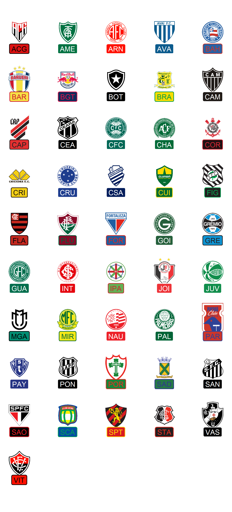

The goal of futebolplotR is to provide functions and geoms that help creating visualization of Brazilian soccer related analysis. It provides a ggplot2 geom that does the heavy lifting of plotting Brazilian soccer badges in high quality, with correct aspect ratio and possible transparency.
The futebolplotR contains emblems of the teams that have participated in the Brasileirão Série A soccer league from 2003 to the present day. Other teams are also welcome!
This package can be used with data from brasileirao R package.
Since version 0.1.0, futebolplotR requires ggplot2 >= 4.0.0.
The code for this package was heavily based on nbaplotR with minor changes to support Brazilian soccer team badges.
Installation
You can install the development version of futebolplotR from GitHub with:
if (!require("pak")) install.packages("pak")
pak::pak("brunomioto/futebolplotR")Using futebolplotR
The key function in the package is geom_futebol_badges() which will add Brazilian soccer team badges to a ggplot. Here you can see all the current available teams (currently 46) to plot.
library(futebolplotR)
library(ggplot2)
team <- futebolplotR::valid_team_names()
n_cols <- 5
n_rows <- ceiling(length(team) / n_cols)
df <- data.frame(
a = rep(1:n_cols, n_rows)[seq_along(team)],
b = rep(n_rows:1, each = n_cols)[seq_along(team)],
teams = team
)
ggplot(df, aes(x = a, y = b)) +
geom_futebol_badges(aes(team_abbr = teams),
width = 0.1) +
geom_label(aes(label = teams,
color = teams,
fill = teams),
linewidth = 0.5,
nudge_y = -0.35)+
scale_color_futebol(type = "secondary")+
scale_fill_futebol(type = "primary")+
theme_void()+
theme(
plot.margin = margin(15,15,15,15,"pt")
)+
coord_cartesian(clip = "off")
For more information on using the package, check out our Getting Started article
Credits
This package was created by Bruno Mioto and Gabriela Junqueira. We thank Sebastian Carl for creating the nflplotR and nbaplotR packages, which were fundamental to the development of futebolplotR.